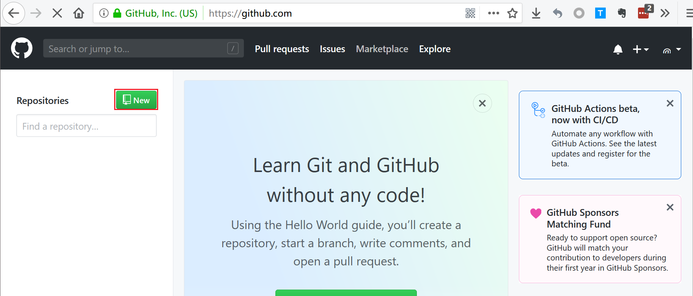

ubuntu系统中利用 github page+hexo搭建blog
一、前言
1、为什么搭blog？
想有一个自由却又严谨的空间，认真的做笔记、记录成长、好好学习的空间。混乱的脑子与头绪需要理清，生活也需要有一个认真记录的地方。希望从今开始认真的生活，努力的朝着自己的梦想前行。
2、此文为本胖记录自己搭建blog所踩过的坑，所以本文是按照本胖踩坑顺序所写。另外本胖电脑安装了ubuntu子系统，所以下文所安装的软件全是linux系统中安装的，超简单的命令行安装可以说是超级友好了。
二、git相关
git入门相关资料：Pro Git（中文版）、Git菜鸟教程、Github 简明教程
2.1 注册github账号
在github官网上注册账号
2.2 客户端安装git
ubuntu客户端下载安装git，并与github连接
1 | #安装git |
2.3 将ssh公钥放入github
打开github的setting key页面，将刚刚创建的公钥中的文本内容复制进key的文本框中，如下图所示
输入ssh -T git@github.com测试是否配置成功，若出现如下字样则说明配置成功
2.4 创建个人仓库
在github新建个人仓库，命名规则为用户名.github.io，例如本胖叫peana，则项目名为peana.github.io。这也是日后本胖博客的URL，创建方式如下图所示

三、安装node.js及hexo
3.1 安装node.js
1 | #安装nodejs 9.x版本 |
3.2 安装hexo
1 | npm config set registry http://registry.npm.taobao.org //由于国外npm源网速过慢，建议更换为国内源 |
3.3 初始化博客
安装hexo完成后即可初始化本胖的博客了
1 | #在家目录下新建一个blog文件夹以完成hexo的初始化，文件夹无需自己创建，以下命令会自动创建 |
检测博客是否搭建成功
1 | hexo generate //生成静态文件,该命令可以简写为hexo g |
访问localhost:4000检查hexo是否启动
最后就可使用hexo d命令，将生成的静态文件部署到github上了
四、美化属于自己的blog
4.1 选择主题
选择喜欢的hexo主题，并修改相应配置
在hexo的官网主题平台寻找自己喜欢的hexo主题https://hexo.io/themes/，在本胖的两天的寻找下，终于找到了一个超级心满意足的主题Annie。感谢主题制作者Sariay 。齐全易懂的主题使用说明也相当友好了。
4.2 修改配置
按照Annie主题作者所提供的readme修改配置https://sariay.github.io/2018/08/27/Annie%E4%B8%BB%E9%A2%98%E4%BD%BF%E7%94%A8%E8%AF%B4%E6%98%8E/
4.3 利用github搭建云图库
搭建annie主题所需要的云图库，采用github仓库创建仓库的方式为博客提供图片。
A 创建一个新的代码仓库，命名为Random-img
B 在本地创建git本地仓库，连接到github远端仓库
1 | #在家目录创建本地git仓库 |
C 打开github代码仓库的page功能
打开Random-img代码仓库，settings–options–GitHub Pages （githua pages 设置在靠下位置，需要向下滑动才能查看
此URL即随机图片所需引用的地址，按4.2 配置说明修改相关配置文件